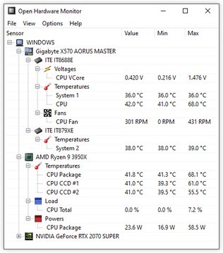

Overheating
2 Check your temperature.
Use a trusted hardware-monitoring tool, if available, to check CPU and GPU temperatures. Task Manager doesn't show temperatures on every PC.

Normal temperatures vary by device and workload. Consistently high temperatures may
need further attention.
What to check:
- Use a trusted temperature tool if available.
- Compare readings with the device manufacturer’s guidance.
- A high reading depends on the workload and hardware.